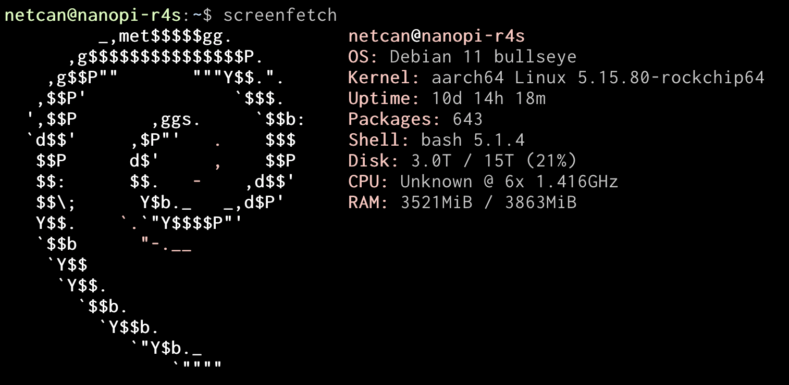
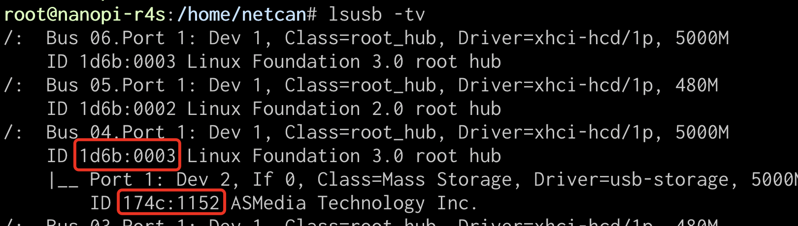

缘由
最近在折腾软路由，起因是发现家里无线路由器跑科学跑不满带宽，经过观察发现瓶颈在 CPU 上，于是想到要整个更强劲的路由器，经过一番调研，性能强劲的路由器都不便宜，于是决定采用软路由方案。
软路由相当于一台低功耗的电脑，可以自由地跑一些操作系统，例如 OpenWrt 系统专门做路由系统，非常适合折腾。
软路由选型
目前软路由硬件体系有两大类，分别是 x86 和 arm 架构，x86 可以折腾的范围更广，例如可以跑 windows 系统，跑虚拟化，挂一堆虚拟机。但是 x86 一整套下来（硬盘 + 内存）普遍价格要比 arm 贵得多，基本上千，而 arm 只需要几百块，缺点是硬件可扩展性要差些。
我对虚拟化和 windows 不感冒，对 x86 也没什么好感，所幸选择了 arm 架构，对我来说 Linux 系统足够给力，并且也可以跑一些 docker 容器，如下是我整套的配置：

闪绿色的灯即为软路由，在咸鱼上花了 400 买的，六核 cpu（双核 A72+ 四核 A53）+ 4G 内存 + 两个 USB3.0，需要额外的 sdcard 启动系统，它作为主路由桥接光猫拨号上网，并且旁边的无线路由器作为桥接 AP，外接一个硬盘盒挂载 16T 的希捷银河企业盘做 NAS。
系统选型
起初我是选用 OpenWrt 作为软路由系统，那时候还没有买 16T 硬盘，只是挂接着大学闲置了 4 年的西数 1T 硬盘作为 NAS，读写速度能够到达 50MBps，千兆局域网速度完全带得动。
OpenWrt 支持 docker，这样大大简化了服务的部署方式，例如部署 Syncthing 服务，将手机照片同步到硬盘上，只需要一行命令：
docker run -d -v /mnt/nas/syncthing:/var/syncthing --restart=always \
-p 22000:22000 -p 21027:21027/udp -p 8384:8384 syncthing/syncthing:latest手机也安装 Syncthing 客户端：

然后通过朋友 zhiyb 给我邀请进了 pt 站（内站 hdtime 和外站 torrentleech），在下载了一段时间后，发现文件系统经常损坏，这时候我才意识到，硬盘可能出问题了，得考虑换硬盘。在这种情况下，外站 torrentleech 由于分享率不达标被 banned 了，没救回来：
玩 pt 站要求还是有的，在 torrentleech 站主要违反了两条规则：
- 分享率（上传量和下载量的比值）要大于 0.4
- 下载的资源必须得做种一段时间后，才能删除
当然以上都是由于硬盘的不靠谱导致的，于是我考虑使用硬盘盒 + 机械硬盘的方案。考虑到硬盘容量（16T）比较大，而且未来有组 RAID 的想法，我决定使用 zfs 文件系统，而 OpenWrt 目前是不支持 zfs 的，因为 zfs 需要 kernel 支持，而且没在主线中，并且工具链也无法支撑构建完整的支持。
这时候考虑使用正经的 Linux 系统，例如 Debian 操作系统，经过一番搜索，发现 armbian 操作系统是基于 debian 的，顾名思义是针对 arm 开发板所优化的操作系统，于是它成为我最终所使用的操作系统。

使用正经的操作系统有另一个好处是，可以直接在软路由上编译软件，而 OpenWrt 编译就需要使用一整套交叉编译器了。
Armbian 折腾记
由于 Debian 系统并不是专门做路由的，因此没有 OpenWrt 那样方便的网页管理界面，这就需要我们使用命令行配置。
配置网络
详细配置过程可以参考这篇文章 使用 Debian 作为路由器 ，补充说明一点，文章里面的wan(eth1) 口配置是采用 dhcp 模式获取 ip，而通过拨号本身会产生一个 ppp0 接口并获取对应的 IP，如果需要将软路由作为主路由，那么需要将 wan 口的 dhcp 模式关闭，否则网络重启获取不到 IP 会比较耗时：
$ vim /etc/network/interfaces
auto eth1
allow-hotplug eth1
iface eth1 inet manual
pre-up ifconfig $IFACE up
post-down ifconfig $IFACE down其实通过软路由进行拨号，就说明了它是作为主路由使用的，可以直接通过上述将 wan 口的 dhcp 模式关闭。
配置防火墙
由于我拥有公网 v4 地址，所以需要配置防火墙，使用 nftables 配置即可，默认将所有公网主动请求连接给 drop 掉：
table inet filter {
chain input {
type filter hook input priority 0; policy drop;
# allow local connection
ct state established,related accept;
}
}这样会导致一个问题，就是无法获取公网 v6 地址，需要进一步放开 v6 相关连接，以便获取到 v6 地址：
chain input {
icmpv6 type {nd-neighbor-advert, nd-neighbor-solicit, nd-router-advert} accept;
meta nfproto ipv6 udp dport 546 accept;
}通过浏览器访问 https://test-ipv6.com/ 确认 v6 情况：
配置 WireGuard 外网访问
有了公网地址，便可以通过将服务的端口开放，以便在外网也能访问家里服务，这就面临了一个问题，如果服务越多，那么开放的端口也就越多，安全性也无法得到保障，目前有两种方案可以解决这个问题：
- 使用 nginx 做反代
- 使用 vpn 接入
以上思路都是只需要暴露一个端口，减少安全风险。
方案一如果考虑安全性，还需要配置域名，以及 https 证书，整套折腾下来比较麻烦，所以可以考虑方案二通过 vpn 接入，那就是使用更加现代、简单、安全的 WireGuard。
这里以手机访问家里网络的场景为例，首先是软路由端的配置。
WireGuard 已经合入内核 5.6 主线，所以只需要安装相关工具即可：
sudo apt-get install wireguard-tools使用 wg genkey 生成私钥，然后编辑 /etc/wireguard/wg0.conf 配置文件：
[Interface]
Address = 10.0.0.1/24
PrivateKey = 生成的私钥
ListenPort = 51820
[Peer]
PublicKey = B5ptxxjnKXwVHEa/GdfgM7tpkQvkYhgzH0bMhJGopjY= 对端的公钥，例如手机的
AllowedIPs = 10.0.0.2/32 # 手机的 ip开启 WireGuard 服务：
systemctl enable wg-quick@wg0
systemctl start wg-quick@wg0通过使用 wg 命令查看软路由的公钥：
$ sudo wg
interface: wg0
public key: oOra3PGajdyv6a5VFaTfL6L1pJpWar5gBR0kxSArtww= 软路由的公钥
private key: (hidden)
listening port: 51820配置防火墙，开启 51820 端口，注意该端口是 udp 的：
chain input {
udp dport { 51820 } accept;
}前面提到配置文件里面需要填对端的公钥，也就是手机端的，下载手机的 WireGuard 客户端配置，便能拿到公钥：

将手机端的公钥填到软路由的 [Peer] 配置中去，将手机的 Peer 公钥填上软路由的公钥，注意保活间隔填一下，这里填 25 秒，然后路由器的 IP 段填上你需要访问家里的 IP 段。
简而言之，WireGuard 简化了 vpn 部署过程，只需要连接的双方提供对端的公钥即可。
开启连接后，手机在外网便能轻轻松松访问家里服务。
配置 DDNS 服务
一般家宽的公网 ip 会动态变化，如果在外网环境下，ip 变化将导致无法连入家庭网络，这时候可以考虑购买域名，然后配置 DDNS 服务，每隔一段时间将 ip 上报给 DNS 服务商，这样就只需要通过域名访问即可，也不需要记忆 ip 地址，尤其是 v6 地址相当复杂。
DDNS 服务一般也是定时任务，通过脚本自动更新，每家 DNS 服务商提供的更新接口都不一样，所以需要自行根据域名所绑定的 DNS 服务商查找相关脚本。
配置 OpenZFS
使用 zfs 文件系统是为将来组 RAID 做准备的，由于软路由的系统比较完整，所以可以直接通过源码编译：
sudo apt-get install -t bullseye-backports zfs-dkms zfsutils-linux通过 ls -l /dev/disk/by-id/ 可以拿到硬盘 id，从而创建tank：
zpool create tank ata-ST16000NM000J-2TW103_ZR58WBCD使用 zfs mount 挂载硬盘，路径位于 /tank 下。
目前 Linux 的 USB3.0 驱动 uas 不稳定存在掉盘的可能，因此需要换成 usb-storage 驱动，通过使用 lsusb -tv 查找硬盘盒的 ID：

然后修改 /boot/armbianEnv.txt，将usbstoragequirks 字段加上ID:u：
usbstoragequirks=0x2537:0x1066:u,0x2537:0x1068:u,0x1058:0x25a2:u,1d6b:0003:u,174c:1152:u最后通过 update-initramfs -u 更新 uboot 后，重启软路由，驱动将从 uas 变成usb-storage。
部署相册服务
前面提到可以通过使用 docker 快速部署服务，通过部署 Syncthing 可以将手机上的照片同步到 NAS 上，通过部署 PhotoPrism 服务可以给相册归档、分类、生成精彩瞬间，便于查看：

具体部署指南可以参考https://docs.photoprism.app/getting-started/docker-compose/。
一个缺点是它无法自动索引照片，得手动点击开始按钮，通过 Chrome 浏览器的开发者工具抓取索引请求，然后让软路由每天凌晨自动索引：

将拷贝到的请求存到一个 sh 脚本中，通过 crontab -e 添加定时任务，例如每天凌晨两点进行索引：
# m h dom mon dow command
2 0 * * * /home/netcan/crontab/photo_prism_index.sh部署 Transmission 客户端
有了那么大的硬盘如果闲置就浪费了，可以混 pt 站点，下载感兴趣的资源并保种分享。我们可以考虑使用 Transmission 客户端，能够很好地对资源进行管理：
该客户端安装比较简单，通过 apt 便能安装，感兴趣的可以自行部署。默认的 WEB 管理页面比较简陋，可以考虑手动装下https://github.com/ronggang/transmission-web-control。